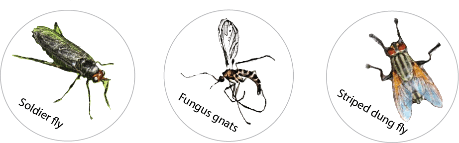

DNADRV sampling process
Each of the 6,000 samples are paired, as a background swab is taken (after cleaning the plate) to identify any insects that may have been on the number plate prior to cleaning, and then another swab is taken after a car drive to identify newly collided insects. The car route is recorded to map the rough location of the insects. Although the resulting dataset will consist of insect species, it is also possible that other organisms such as bacteria, fungi, and plants will be able to be detected.
Our first trial run was in March 2024, where we collaborated with the Auckland Vintage and Veteran Car Club. We cleaned and swabbed 19 of their car number plates before an ~2hr rally around south Auckland, and we swabbed the plates again when they finished driving. The most abundant of these was fungus gnats (50%), striped dung flies (14.7%), and coddling moths (9.3%). Other insects indentified included soldier flies and rove beetles. As predicted, because cars drove the same route the insect assemblage was largely coherent.
